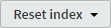
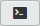

7.2.1
Resetting to an earlier commit point
Currently the project looks like this:

Figure 7.4 Final arrangement, all merged back to master branch
There is a single branch with eight commits and the is at the most recent commit, in my case [07fe437].
Looking at this in the Brackets commit history I have:
Figure 7.5 Brackets commit history
- At this point I suggest you take a screen shot of your commit history,
you will regret it if you don’t, as you will come to see, it’s quite handy knowing the commit numbers.
There are a few things to note here: firstly every commit point has a tag (this isn’t necessarily vital, but it allows me to indicate exactly which commit point I’m referring to in the following text).
Secondly we have eight files:
| LIST OF FILES AT COMMIT 07FE437 TAG: P03 | |
|---|---|
|
index.html 01-intro.html 02-about.html README.md .gitignore 11-resources\01-css\style.css 11-resources\02-images\logo.png 11-resources\02-images\readme.png |
|
| Table 7.1 File list at commit point P03 [07FE437] |
If I close the commit history Git is reporting:
Nothing to commit, working directory clean
So there are no changes pending (the files in the working area and staging all match the committed files).
So let’s do a reset, I’m going to go right back to the first P01 commit point [25c1410] in my list.
To do this, open the commit history (Figure 7.5) and click anywhere on the P01 commit line [25c1410]. This will open the commit information screen:

Figure 7.6 P01 commit point information screen
Now click the button . This will open the reset type dropdown menu:
Figure 7.7 Reset type menu
As I said in section 2.5, the only type of reset to do is a hard reset:
|
THE BEST RESET IS A HARD RESET |
So let’s do that, click the top line .
Now we get an “are you sure?” box:
Figure 7.8 Reset “are you sure?” box
Click .
Now we’ve done it.
Open the commit history:
Figure 7.9 Commit history after the reset
Well, we’re still on the master branch. But we now only have two commit points (D01 and P01).
The files have changed too; we now only have these files:
| LIST OF FILES AT COMMIT 07FE437 TAG: P03 | |
|---|---|
|
index.html README.md .gitignore 11-resources\01-css\style.css 11-resources\02-images\logo.png 11-resources\02-images\readme.png |
|
| Table 7.2 File list after reset to P01 [25c1410] |
The files that were added after have disappeared:
|
01-intro.html 02-about.html |
|
Also if we were to look inside the lab-01-website folder with Windows Explorer we would only see index.html, README.md and .gitignore.
Figure 7.10 The working directory after the reset
The project really has moved back in time to the earlier commit points, if I opened any of the project files, they would be exactly as they were at the time of the commit.
Using the best practice approach to resetting I discussed in section 2.5.4, this would allow us to copy any or all of the files from this commit point and, after moving back to the most recent commit point, paste them into the working area and make a new commit with the old files from the earlier commit (i.e. replace the most up to date file with an older file).
This leads to the question: “how do we get back to the most recent commit?”
Errr…
Well you can’t. Not just like that. Not from within Brackets.
It’s like we went back in time and the Tardis broke down and now were stuck with the bloody Victorians (and possibly Peter Capaldi, which would be worse). Actually, it’s more like being stuck in the eighties with Zork.
And fortunately, in the eighties we had access to the command line; and boy can that thing can bail us out of some shit. (I don’t know how we managed without it—I take back everything I said).
We can start the Git Bash command line terminal emulator from Brackets; in the Git Pane click the terminal icon , if you ticked the option in the Git settings (Figure 7.1) you can also start the terminal emulator from the right sidebar icon: .
Figure 7.11 Git terminal emulator
I hope you kept a record of all the commits.
We’ve reset the project back to commit point [25c1410]; this can be seen from the history in Figure 7.9.
Now the latest commit, is commit [07fe437]; this can be seen in the original history before the reset, Figure 7.5.
So in my case, I want to move the head back to commit point [07fe437] to put everything back how it was. I have to do this in the command line. Enter the following:
| $ | git reset 07fe437 --hard |
Obviously, you need to enter your commit number. It gives me this:
Figure 7.12 Hard reset using the command line
And if I now look at the history in Brackets, I’m back where I started:
Figure 7.13 Brackets commit history
Phew…
What if I can’t remember my original commit?
What did I say at the start of this? “Take a screen shot of your commits” I said, “you’ll regret it if you don’t”—sound familiar?
Ok, there is a couple of ways round this: firstly, you can reset to a tag.
In the above example I got back to the most recent commit point by resetting to a commit number:
| $ | git reset 07fe437 --hard |
The syntax for this is:
| $ | git reset <commit number> --<type of reset> |
The order is commit number followed by type of reset.
In my case the commit point [07fe437] also has the tag P03 (you can see this in Figure 7.13).
To reset to the same point using a tag, the command is:
| $ | git reset --hard P03 |
The syntax being:
| $ | git reset --<type of reset> <tag name> |
Yep, the order is type of reset followed by the tag name.
That’s not at all confusing is it? But there we are, what can I say?—Linux people.
Ah, but what if it the commit doesn’t have a tag and I can’t remember the commit number?
Well, Git can always list all of the commits.
Do a hard reset back to the P01 commit point (same as I did above).
You will just have the two commit points of Figure 7.9.
Open the Git command line terminal and type:
| $ | gitk --all |
You should get something that looks like this:
Figure 7.14 GITK, a commit history viewer
Wow—WTF is that? You ask.
gitk is the commit history viewer that was installed when you install Git. We invoked it when we entered gitk in the command line. The --all tells gitk to show all commit points.
The important bit is the little diagram at the top left. This is currently showing information about the current head point (P01 in blue in Figure 7.14)
We want the commit number of the most recent commit; this is at the top of the diagram. To get the commit number click the commit message next to the commit (it starts ‘P03: published’):
Figure 7.15 GITK, find a commit number
The commit number of the selected commit point is shown in the field just under the branch diagram (highlighted in orange in Figure 7.15). This field can be selected (wholly or in part) and copied to the clipboard, remember you only need to copy the first seven digits of the commit hash number (it will work if you copy all of it too).
Copy what you need, close gitk and enter the reset command in the command line:
| $ | git reset <copied hash> --hard |
OK, that’s resetting—it’s a pain in the arse.
The better way, as I said at the start, is to use the checkout function. I cover this in the next section.

{kind=link}
{kind=link}
{kind=link}
{kind=link}
{kind=link}
{kind=link}
{kind=link}
{kind=link}
{kind=link}
{kind=link}